EL MUNDO DE LyE
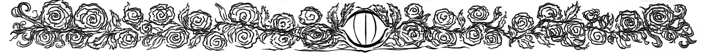
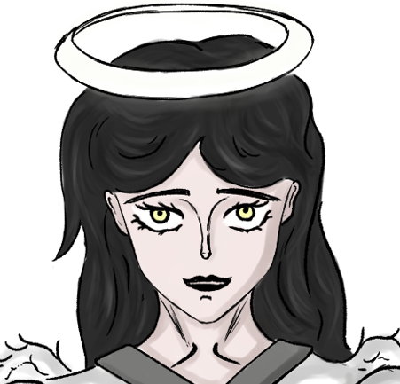
¡Bienvenidos al archivo oficial! Aquí conoceréis a las almas que dan forma a este universo. ¡No os perdáis ningún detalle! ~
PRESENTACIÓN DE PERSONAJES
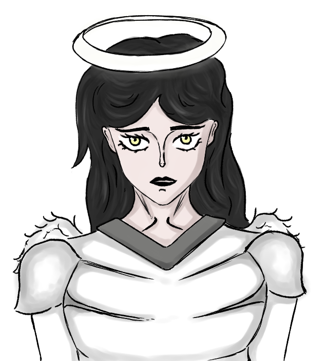
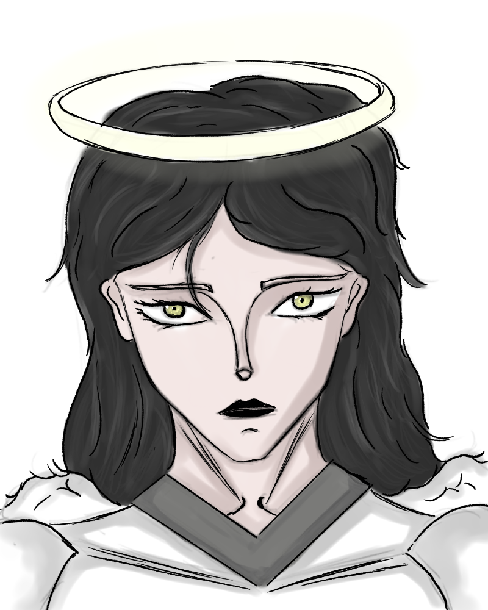
Liora
Clase: Querubín
Sexo: Femenino
Concentración de cromosomas “l-y”: 22%
Altura en cm: 150 (niña), 172 (adulta)
Peso en kg: 37 (niña), 57 (adulta)
Cabello: Castaño claro (antes del cambio), negro azabache (después del cambio)
Tono de piel: Claro
“Perteneciente al grupo de especímenes con cromosomas “l-y” cuyo cerebro fue preservado de manipulaciones”.
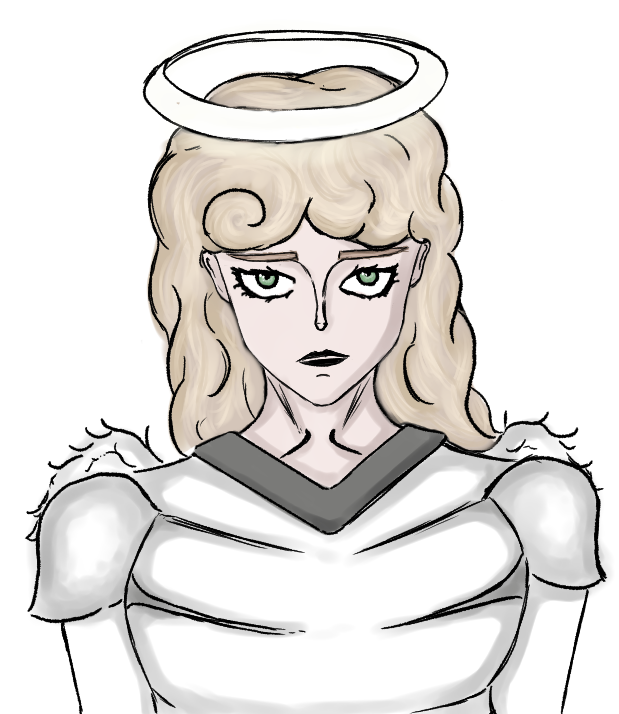
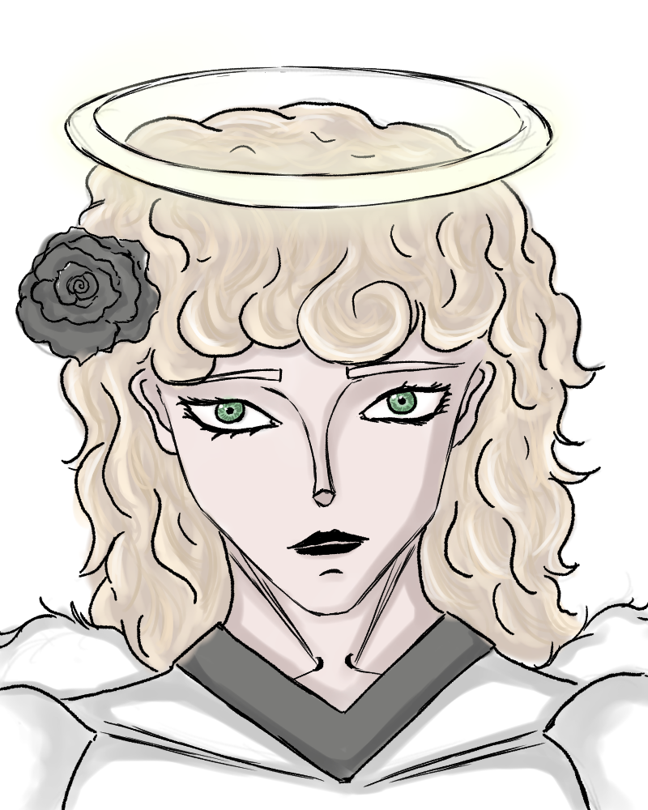
Estela
Clase: Querubín
Sexo: Femenino
Concentración de cromosomas “l-y”: 38%
Altura en cm: 151 (niña), 174 (adulta)
Peso en kg: 39 (niña), 60 (adulta)
Cabello: Rubio
Tono de piel: Claro
“Perteneciente al grupo de especímenes con cromosomas “l-y” cuyo cerebro fue preservado de manipulaciones”.
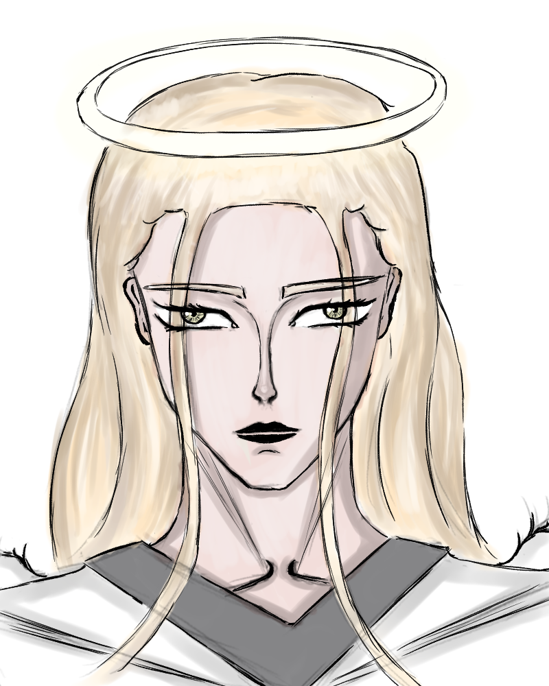
Lyra
Clase: Seraphin
Sexo: Femenino
Concentración de cromosomas “l-y”: 2.1%
Altura en cm: 185
Peso en kg: 77 kg
Cabello: Rubio
Tono de piel: Claro
“Perteneciente al grupo de especímenes con cromosomas “l-y” cuya amígdala, corteza cingulada anterior, circuito de recompensa y corteza prefrontal ventromedial fueron manipulados”.
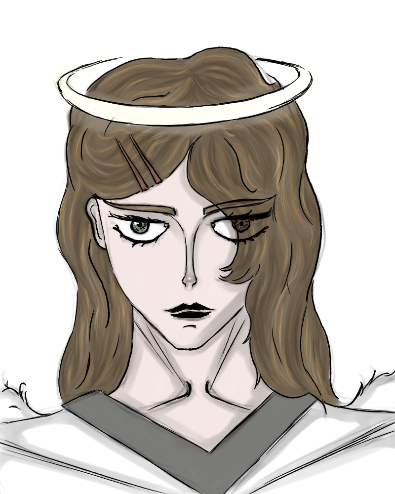
Venera
Clase: Seraphin
Sexo: Femenino
Concentración de cromosomas “l-y”: 1.2%
Altura en cm: 172
Peso en kg: 64 kg
Cabello: Castaño
Tono de piel: Claro
“Perteneciente al grupo de especímenes con cromosomas “l-y” cuya amígdala, corteza cingulada anterior, circuito de recompensa y corteza prefrontal ventromedial fueron manipulados”.
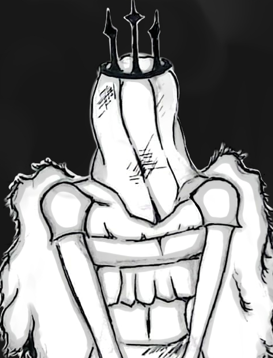
Muñecas de Velo
Organización clandestina de especímenes querubines de sexo masculino y femenino, con una media de concentración cromosómica “l-y” de 0.5% a 0.6%.
“Pertenecientes al grupo de especímenes con cromosomas “l-y” cuyo cerebro fue preservado de manipulaciones”.
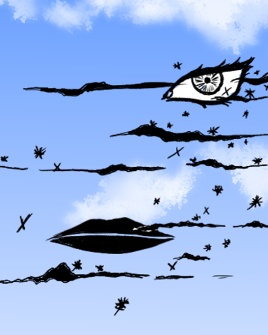
Grin
Clase: ?
Altura en cm: ?
Sexo: Hipotéticamente masculino
“Este sujeto es el actual gobernante del paraíso”.
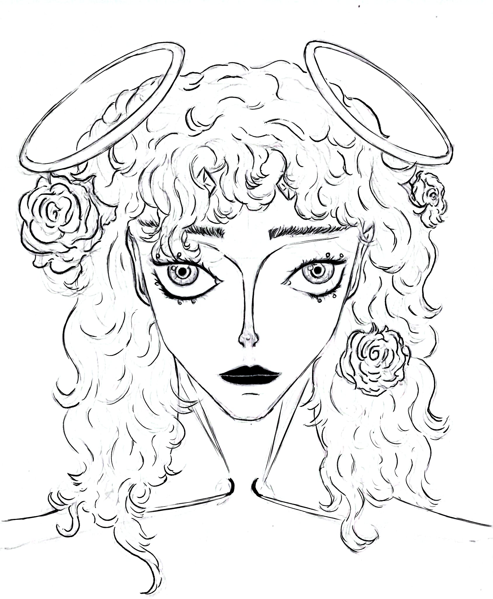
Lyza ✨ Divinidad
Clase: ?
Altura en cm: 212
Peso: ?
Sexo: Hermafrodita
“Espécimen con doble halo, motivaciones desconocidas, estado desconocido, localidad desconocida”.
EL CROMOSOMA L-Y
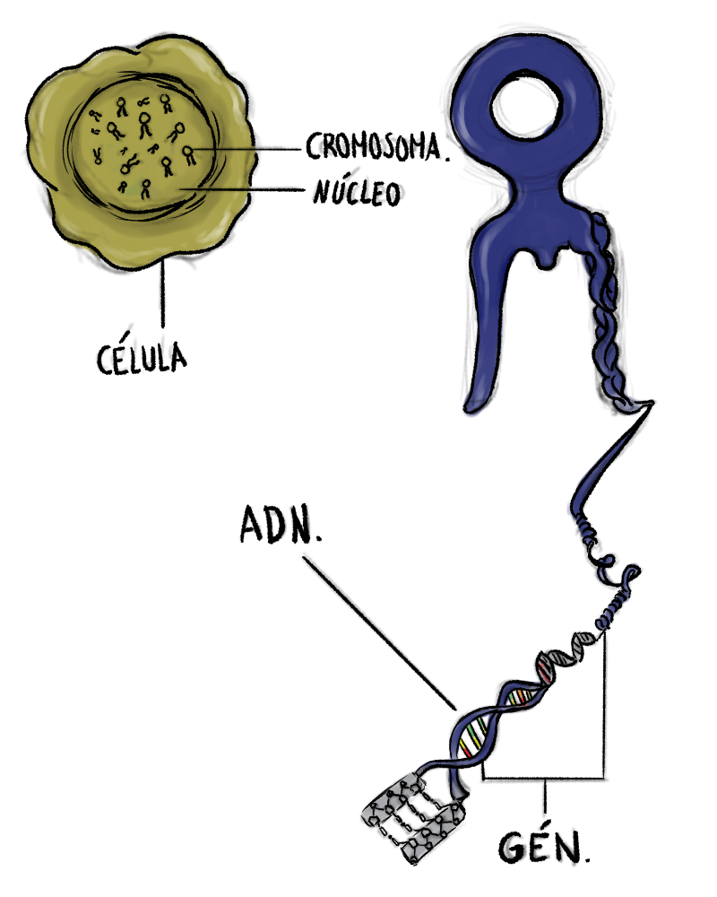
Definición del cromosoma
El cromosoma L-Y utiliza una arquitectura toroidal sin telómeros para una transcripción cíclica continua que evita la senescencia celular.
Compatibilidad con el ADN humano
Su integración en los intrones humanos se logra mediante retrotranscripción, aprovechando la maquinaria del huésped como amortiguador metabólico.
Implicaciones del cromosoma ageno en el huésped
El organismo experimenta una alteración somática profunda y una persistencia celular indefinida, cuya estabilidad depende de la proximidad a la fuente matriz.